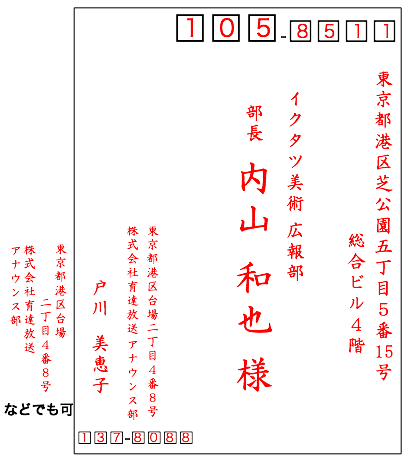
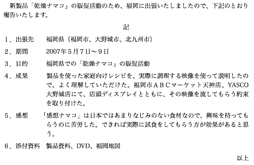
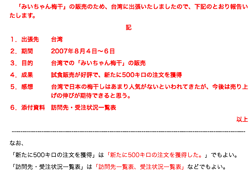

問題１
下文中有表達「事實」的句子以及表達「意見」的句子。例如「這個白蘿蔔50日圓」即為表達「事實」的句子。另一方面「這個白蘿蔔真便宜」則是表達「意見」的句子。請在以下句子中挑出表達「事實」的句子並且以數字標記。
- コカ・コーラは食べ物である。
- 日本人は、みんな眼鏡をかけている。
- この建物は50年前に建てられた古い民家である。
- 物を買うにはお金を払わなければならない。
- 学生は勉強をしなければならない。
文には「事実」を表わす文と「意見」を表す文がある。「この大根は50円である。」は事実を表わす文である。一方、「この大根は安い。」は意見を表わす文である。次の文の中から「事実」を表わしている文をすべて選んで数字で答えなさい。
正答：１、２、４（配点：１×３=３）
問題２
請用日文說明①〜②個別為何。（例：〜とは〜のことをいう。）
- 「ビジネス文書」（ビジネスぶんしょ）
- 「時候の挨拶」（じこうのあいさつ）
次の①〜②は、それぞれどのようなものか。日本語で説明しなさい。（例：〜とは〜のことをいう。）
正答例：
- ビジネス文書とは、ビジネスの様々な場面で作成される公式の文書のことをいう。/ビジネス文書とは、ビジネスのために仕事のなかで作成される様々な文書のことをいう。
- 時候の挨拶とは、(あいさつ文のなかに書く)季節の挨拶のことをいう。/時候の挨拶とは、(あいさつ文のなかに書く)四季それぞれに合わせた挨拶のことをいう。
（配点：５×２=10）問題３
請將以下漢字以平假名標音。
①始末書 ②安否 ③顧客 ④詳細 ⑤都合 ⑥売上実績 ⑦締切日 ⑧決裁 ⑨添付資料 ⑩査収
次の漢字の読み方をひらがなで書きなさい。
正答：①しまつしょ ②あんぴ ③こきゃく ④しょうさい ⑤つごう ⑥うりあげじっせき ⑦しめきりび ⑧けっさい ⑨てんぷしりょう ⑩さしゅう（配点：１×10=10）
問題４
請將①〜⑤以片假名標示的句子改寫成漢字及平假名的句子(注意：漢字及平假名的書寫方式不恰當時將斟酌扣分)。
- キシャ イッソウ ゴハッテン ノ コト ト オヨロコビ モウシアゲマス。
- ヒゴロ ワ カクベツ ノ ゴアイコ オ タマワリ、 アツク オンレイ モウシアゲマス。
- コンゴ トモ ヨロシク オネガイ モウシアゲマス。
- マズ ワ、 ショチュウ オ モッテ ゴツウチ モウシアゲマス。
- タントウ ノ モノ ニ カクニンシマシテ、オデンワ サシアゲタイ ト オモイマス。
カタカナで書かれた①〜⑤の文を、漢字とひらがなの文に書きかえなさい。なお、漢字とひらがなの使い分けが適切でない場合は減点する。
正答：
- 貴社いっそうご発展のこととお喜び申し上げます。/〜お慶び申し上げます。
- 日頃は格別のご愛顧を賜り、厚く御礼申し上げます。
- 今後ともよろしくお願い申し上げます。
- まずは、書中をもってご通知申し上げます。
- 担当の者に確認しまして、お電話差し上げたいと思います。
（配点：３×５=15）問題５
請在以下文章中寫下適當的「頭語」及「結語」。
＿＿＿＿＿ 時下ますますご清栄のこととお喜び申し上げます。
さて、このたびはお見積書をご送付いただき、ありがとうございました。
つきましては、下記の通りご注文申し上げますので、納期までにご納入くださいますようお願い申し上げます。
＿＿＿＿＿
次の文書に適切な「頭語」と「結語」を書きなさい。
正答：拝復／拝啓、敬具（配点：２×２=４）
問題６
請問「取引文書」、「社交文書」、「社内文書」三者之中各別分為哪幾種，並且各寫出兩種。
「取引文書」、「社交文書」、「社内文書」にはどのような種類のものがあるか、それぞれ２つずつ答えなさい。
正答例：
- 取引文書
- 依頼状、紹介状、解答状、請求状、督促状、通知状、詫び状、抗議状、交渉状など
- 社交文書
- あいさつ状、案内状、招待状、礼状、お悔やみ状、お見舞い状など
- 社内文書
- 稟議書、企画書、提案書、報告書、届出書、始末書、通達、辞令、議事録、案内・連絡、照会書など
（配点：１×６=６）問題７
請將下文的內容改成明信片「表書き」
之書寫方式。
- 差出人：〒137-8088 東京都港区台場2－4－8 戸川美恵子（㈱育達放送 アナウンス部）
- 宛て先：〒105-8511 東京都港区芝公園５－５－15 総合ビル４Ｆ
- 宛て名：内山和也（イクタツ美術 広報部部長）
次に指定する条件で、はがきの「表書き」をしなさい。
正答例：

（配点：10×１=10）
問題８
請將以下「社内文書」加上適當的標題。
下記のとおり、営業会議を行ないますので、ご出席願います。
記
１．日時 11月11日（水）10時から12時まで
２．場所 中会議室（北棟２階）
以上
次の社内文書に適切な「標題」をつけなさい。
正答例：営業会議について／営業会議開催の件 など（配点：３×１=３）
問題９
請問社内文書中①〜⑤之中應該填入什麼，請以日文作答（例：「主文」）。
（ ① ）
（ ② ）
（ ③ ）
総務部部長
定例会議の開催日変更について（通知）
標記の会議を、下記のとおり変更するので、承知してください。
記
１ 日時 ５月28日（金）13時から15時まで
２ 場所 会議室（総合ビル３階）
（ ④ ）
（ ⑤ ）
社内文書の①〜⑤には何を書くべきか、日本語でこたえなさい（例：「主文」）。
正答：①文書番号、②日付／発信年月日、③受信者名／あて名、④記述の終わり／結語、⑤担当者・連絡先／担当者名（配点：１×５=５）
問題10
①〜③為社内文書的句子。請各別改寫成恰當的句子。
- ブラウン管式ディスプレイを使っちゃってる社員３名の机上のスペース確保と社員の目の健康への配慮のため、下に書いといたPCディスプレイを買っちゃってよろしいか聞いちゃいます。
- 新製品「乾燥ナマコ」のもっともっと売るのため、福岡に出張いたしましたので、下記のとおり報告してあげます。
- 現在、コールセンターで受けるテレフォンの87％はジャパニーズカスタマーからのものだ。そのため、オペレーターはジャパニーズスキルの他に、ジャパンの一般常識やカスタマーのニーズをアンダースタンドする必要があるのだ。
問題文①〜③は、社内文書の文である。それぞれ適切な文に書きかえなさい。
正答：
- ブラウン管式ディスプレイを使用している社員３名の机上のスペース確保と社員の目の健康への配慮のため、下記のPCディスプレイを購入してよろしいかお伺いします。
- 新製品「乾燥ナマコ」の販促活動のため、福岡に出張いたしましたので、下記のとおり報告いたします。
- 現在、コールセンターで受ける電話の87%は日本人カスタマーからのものです。そのため、オペレーターは日本語スキルの他に、日本の一般常識やカスタマーのニーズを理解する必要があります。
（配点：３×３=９）問題11
請在下表空白處中寫下適當之日語表現。
| 普通の言い方 | 改まった言い方 |
| そっち | |
| 明後日 |
| 後で | |
| いたしかねます |
| そうです | |
| 自称 | 他称 |
| 個人 | わたくし | |
| 複数人 | 私ども | |
| 社員 | 弊社社員 | |
| 配慮 | | ご高配 |
| 受け取り | | ご査収 |
| 尊敬語 | 謙譲語 |
| います | | おります |
| します | | |
| ご存じです | 存じております |
| 言います | | 申し上げます |
次のそれぞれの表の空欄にあてはまる語句を書きなさい。
正答：
| 普通の言い方 | 改まった言い方 |
| そっち | そちら |
| あさって | 明後日 |
| 後で | 後ほど |
| できません | いたしかねます |
| そうです | さようでございます |
| 自称 | 他称 |
| 個人 | わたくし | 貴殿 |
| 複数人 | 私ども | 各位／ご一同様 |
| 社員 | 弊社社員 | 御社社員／貴社社員 |
| 配慮 | 配慮／留意 | ご高配 |
| 受け取り | 拝受／受領 | ご査収 |
| 尊敬語 | 謙譲語 |
| います | いらっしゃいます | おります |
| します | なさいます | いたします |
| 知っています | ご存じです | 存じております |
| 言います | おっしゃいます | 申し上げます |
（配点：１×15=15）問題12
請參考以下文章並且將「內容」部分統整成報告書格式。
参考文書

内容
- 2007年８月４日から３日間、「みいちゃん梅干」の販売のため台湾に出張しました。
- デパート店頭での試食販売が好評でした。
- 試食販売が好調だったので、新たに合計500キロの受注を獲得しました！
- 台湾で日本の梅干しはあまり人気がないといわれてきましたが、今後は売り上げの伸びが期待できると思います。
- 訪問先と受注状況の一覧表を添付します。
参考文書を参考にして、以下の内容の部分を報告書の書式にまとめなさい。
正答：

（配点：10×１=10）